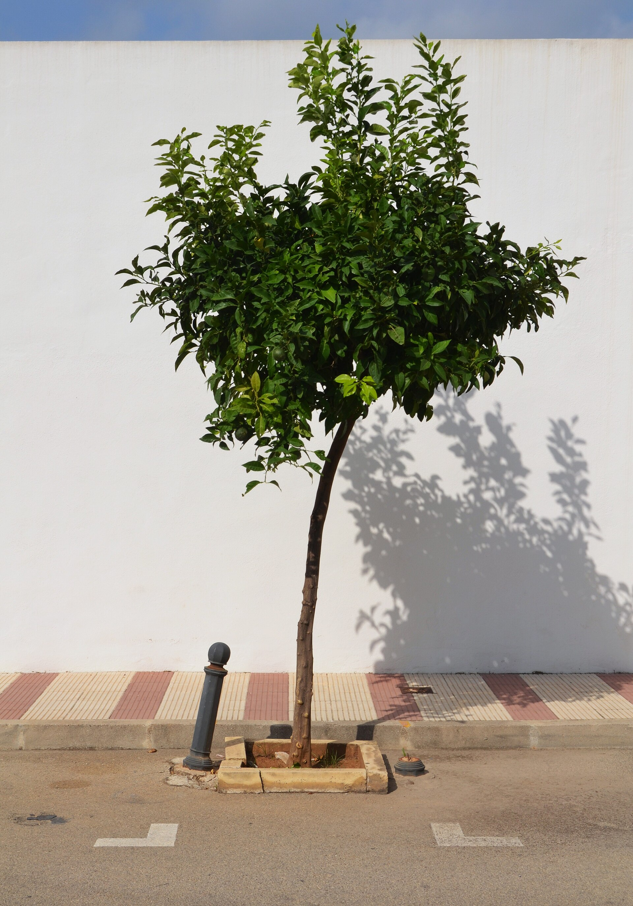

Tout ce qu'il faut faire avant de partir et une fois à Valencia. Dans l'ordre. Pour ne rien oublier.
🌳 Le Parc de Cabecera et son lac : un lieu de détente idéal en famille pour décompresser après les démarches.
📦 PARTIE 1 : Avant le départ
Avant de partir : ce qu'on fait (et ce qu'on aurait dû faire plus tôt)
Cette checklist, c'est notre boussole depuis des mois. Je la partage brute, avec nos erreurs et nos oublis. Commence au moins un an avant si tu peux. Nous on a démarré plus tard et on a senti le stress monter. Apprends de nos conneries.
« Cette checklist, c'est notre boussole depuis des mois. Commence au moins un an avant si tu peux. »
Florian · Préparation expatriation
📅 La phase préparation (12 à 24 mois avant)
Tout est encore flou mais tu poses les fondations. Rien de spectaculaire, mais sans ça tu pars bancal.
🔍 La phase exploratoire (6 à 12 mois avant)
Le moment de confronter le rêve à la réalité. Pose les pieds sur place : un voyage de repérage d'une semaine MINIMUM, hors vacances scolaires.
📝 La phase administrative (3 à 6 mois avant)
Les papiers entrent en scène. Fastidieux, fondamental.
📦 La dernière ligne droite (1 à 3 mois avant)
Là, ça devient concret. Cartons, résiliations, au revoir.
📑 Les documents à ne surtout pas oublier (physique + scan)
C'est long, c'est chiant, mais chaque case cochée te rapproche du départ. Le jour où tu poses tes valises à Valencia avec tout ce bordel organisé, tu te remercies d'avoir bossé en amont. Crois-moi.

🍊 Orangers chargés de fruits dans les rues de Valencia : symbole de douceur méditerranéenne après les préparatifs.
✈️
📍 PARTIE 2 : Une fois sur place
Les premières semaines à Valencia
T'es arrivé. Les valises sont dans l'entrée, les gamins courent partout, t'as cette boule au ventre du « par où je commence ? ». Respire. Voilà notre plan d'attaque, dans l'ordre, testé mentalement cent fois.
Les premières 72 heures sont cruciales. Ce que tu fais, ou ne fais pas, conditionne tout le reste.
🛬 Jour 0 : L'arrivée
⚠️ Conseil clé : Arrive en semaine, JAMAIS le week-end (administrations fermées). Le pire : arriver en août, l'Espagne s'arrête. Vise un lundi ou mardi.
⚡ Semaine 1 : Les papiers, dans l'ordre
C'est la semaine la plus intense. Accepte-le. L'ordre compte.
🏠 Semaines 2-3 : L'installation
📋 Mois 1-2 : Le reste de la paperasse
☀️ Mois 1-3 : L'intégration, le vrai kiff
Maintenant que les papiers sont derrière toi, tu commences à vivre.
💼 Ce que t'as toujours sur toi
La première semaine est dure, le premier mois est speed, et au bout de trois mois t'as posé ta vie. T'es chez toi. Les gamins parlent probablement déjà mieux espagnol que toi. Et tu te demandes pourquoi t'as pas fait ça plus tôt.